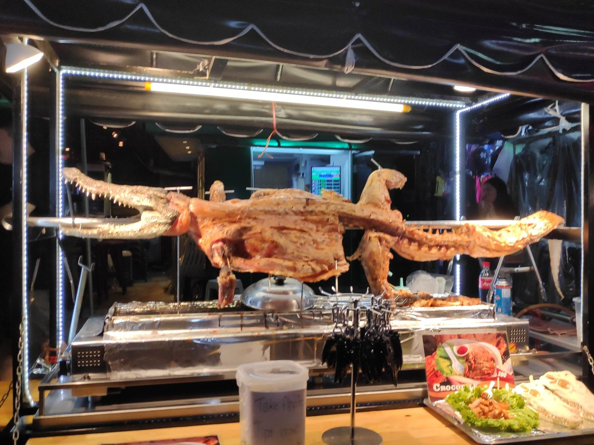
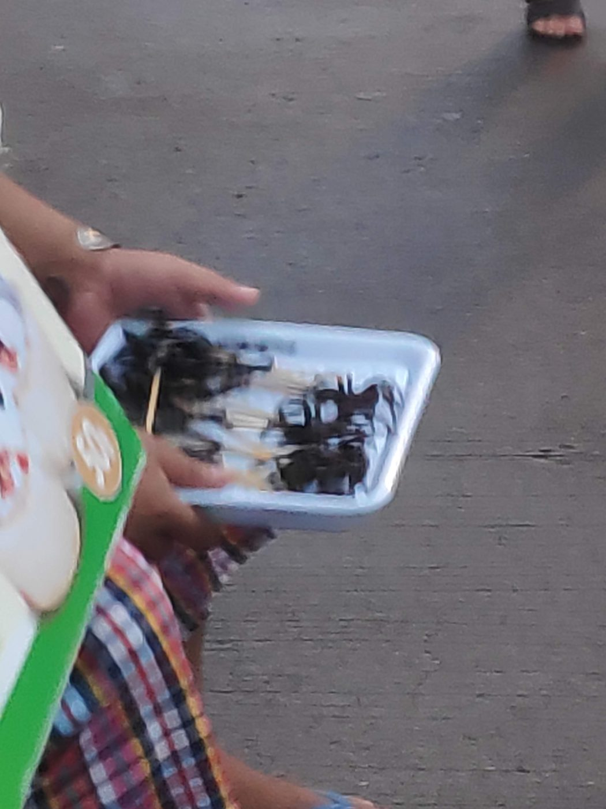
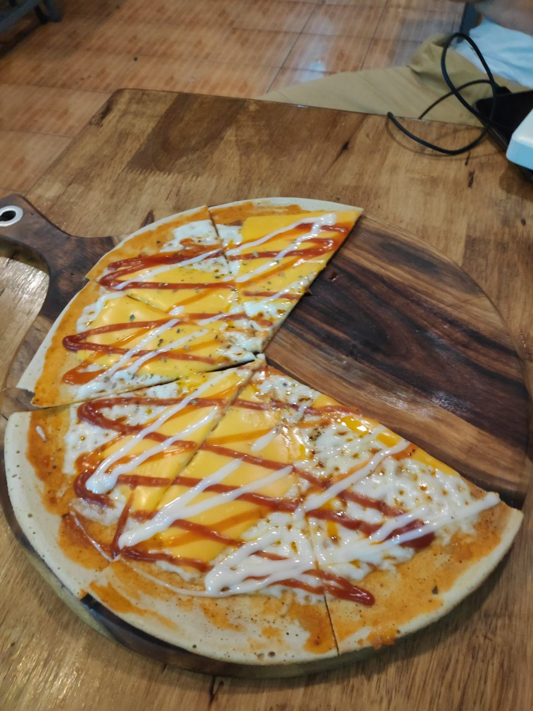
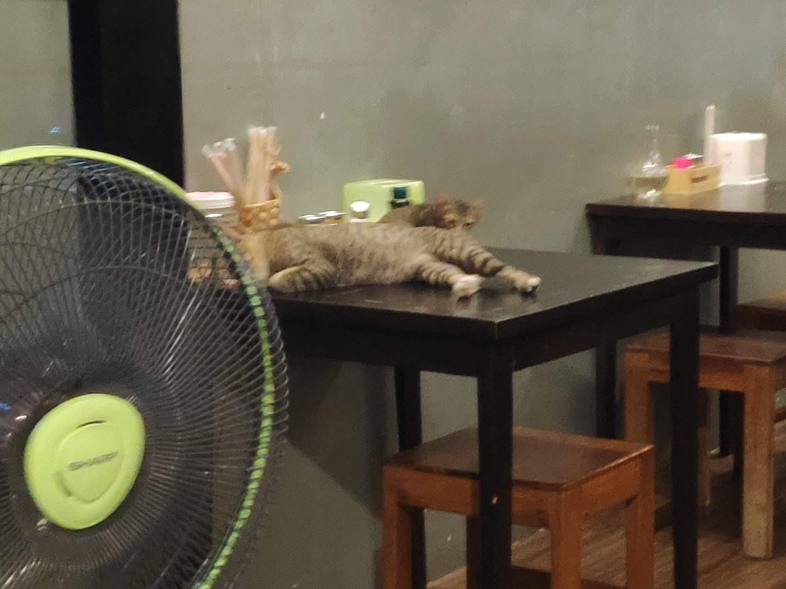
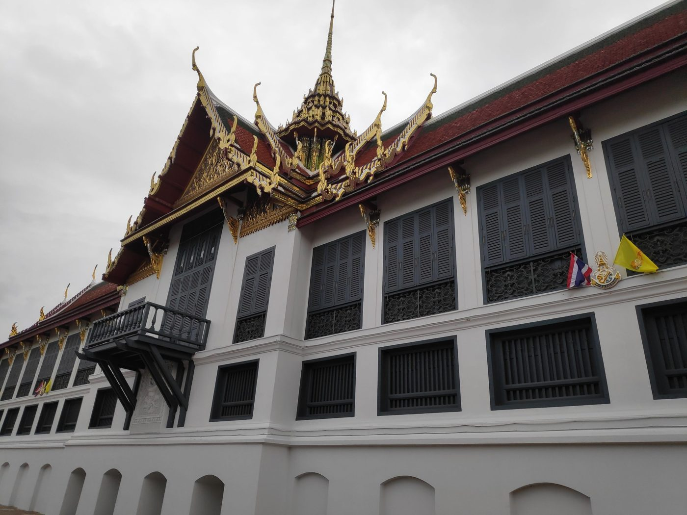
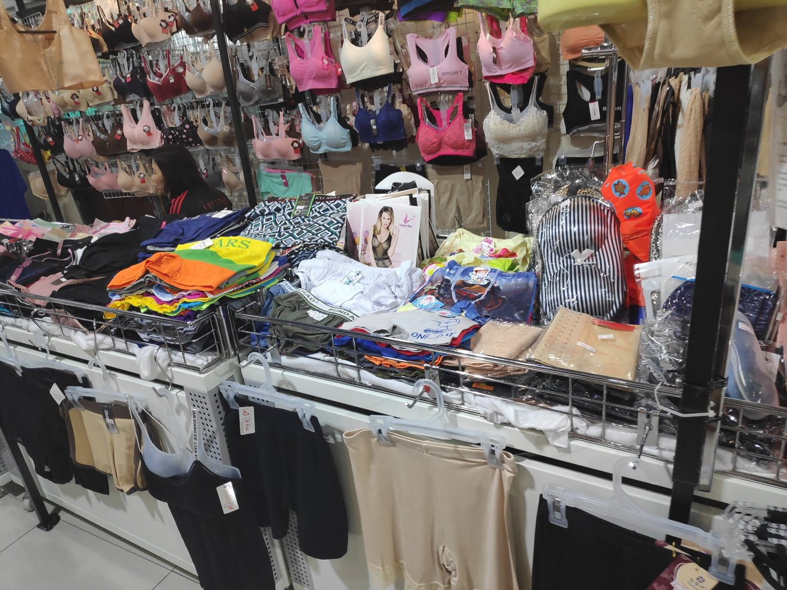
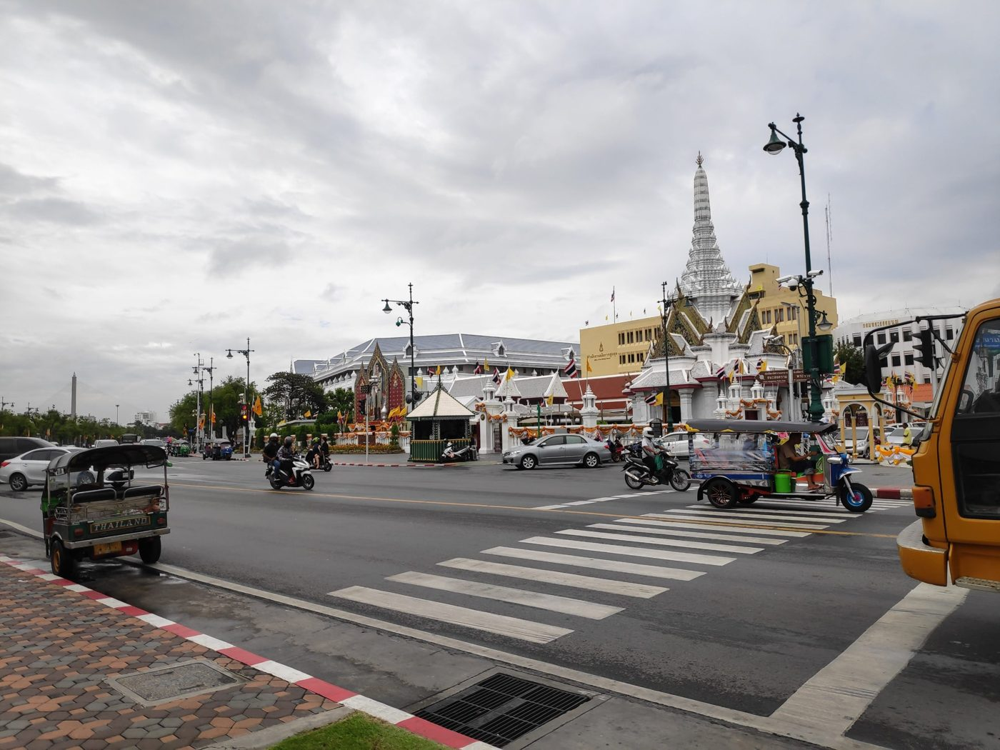

Southeast Asia · Thailand · Bangkok
Bangkok, August and September 2019
In 2019 I spent five days in Bangkok at the start of a trip through Southeast Asia. I stayed in a hostel near Khao San Road, ate at night stalls, went to the water park with a friend, visited the Grand Palace with a group from the hostel, and flew to Krabi on the evening of September 4.
My conclusion up front: this is a record of a few ordinary days, not a plan, and I have fewer exact facts than I would like. I kept some receipts and photos, but I do not remember prices, names or how I moved around. Where I do not know something I say so. I leave out the faces of people I was with and of strangers, and I show no videos, because most of them show people.
The times are my phone's clock, shown by Google Photos in GMT+07:00. The places are Google Photos' pins, and I say where a pin is an estimate. The boxes hold what I looked up in November 2026, each marked as current data and not as a 2019 price.
- Grand Palace: 500 baht for foreign visitors on the guide sites I read, open daily 8:30 to 16:30 on the official site, shoulders and knees covered. There is a booth near the entrance that provides clothes if you arrive underdressed.
- Siam Amazing Park: it was flooded badly in 2026 and partly reopened on November 19. Check before you go, because one ticket site still showed a closure until March 2027.
- My own 2019 prices are in the story and marked as old: a SIM card, two meals and the hostel room.
The sources are in the box below the story. These things change, so check before you go.
August 31: arriving
My first Bangkok photo is from the evening of August 31, 2019. At about 18:50 I bought a prepaid AIS SIM card at the MBK shopping center, and the receipt says 299 baht. That is a 2019 price. I do not remember which airport I landed at, which flight I took or how I got to the city.
I think I slept in a hostel on Ranbutri Street, next to Khao San Road. I am not sure of its name, so I do not give one. The room cost 500 baht a night, and I paid a 500 baht deposit on top of it, according to my receipts. Those are 2019 numbers and I do not know whether the deposit was per person.
September 1: food
On September 1 I kept receipts for two meals: 469 baht at a restaurant called Beef Master and 290 baht at The Kosher Place. I do not remember how many people each bill covered, so the numbers do not say what one meal costs. At 18:13 I photographed a tray of fried insects that someone was holding in a night market, and at some point I photographed a stall with a whole roasted crocodile.


September 2: the water park
On September 2 a friend and I went to Siam Amazing Park, the big water and amusement park in the east of the city. I think we reached the area in the evening, so I do not know how much of the park we used. I do not remember the ticket price, and I do not have a receipt for it.
Near the park there was a market. I photographed a crepe-style pizza there. Google Photos pins the photos around the park, as an estimate and not an exact point. At 19:56 I photographed a cat lying on a café table next to a fan. I do not know the name of the café.


Later that night my friend and I went to look at another hostel to move to. I filmed it around 21:55. We did not move, and I stayed where I was.
September 3: the Grand Palace
On September 3 I went to the Grand Palace with a group from the hostel. At the entrance they asked us to wear a certain kind of clothing, and you cannot go in without it. I did not have it, so I borrowed clothes and then I went in. I do not remember what I paid, and I do not know whether the clothes cost anything.

At 15:35 I photographed a stall that sold clothes. I do not know whether it was connected to the clothes I borrowed. I also have a photo of a street with a temple spire in the distance, which I did not identify.


The night of September 3 to 4
After 01:30 on September 4 I filmed street musicians in Bangkok, the night before my flight. I do not show that video because it shows people playing.
September 4: the flight to Krabi
On the evening of September 4 I was at an airport, on the way to Krabi. My photo is from 18:21. I do not know which Bangkok airport it was, which airline I used, or what the ticket cost. The Krabi chapter continues from there.
- Grand Palace, what I found: the official site gives opening hours of 8:30 to 16:30 and says a booth near the entrance provides clothes for visitors who are not dressed properly (royalgrandpalace.th). A guide site says the fee is 500 baht, that shoulders and knees must be covered, and that visitors have entered through the Mani Noppharat Gate since January 2024 (The Better Vacation).
- Siam Amazing Park, what I found: Nation Thailand reported on November 19, 2026 that the park would partly reopen after its worst flooding in 46 years (Nation Thailand). A travel site says the water park is open from 10:00 to 17:00 and the cleared amusement zones from 11:00 to 18:00 (Chiang Rai Times). One ticket site still said the park was closed from September 26, 2026 to March 15, 2027 (Klook). A guide site lists an adult ticket with a buffet lunch at 750 baht (The Better Vacation).
- What I did not find: what I paid in 2019 for either place, and a single reliable word on whether the whole park is open today. The sites disagree with each other, so check the park's own announcement on the day.
What I think now
Stay in Bangkok as little as possible. That is my advice. For me the city was a place to pass through, and I would not plan more days there than I need.
Siam Amazing Park was nice. It has an amusement park and a water park, and there was a haunted house too. If you want a day like that, it was worth it for me. I do not have a view on the best hour to arrive, because I came in the evening.
The Grand Palace is a tourist attraction, and I do not recommend it.
On food, I would cook and not eat out. In Thailand it can easily happen that insects end up in a dish by mistake. This is my own view, and I did not check how often it happens.
What I do not remember
I do not remember the name of the hostel, which airport I landed at, who ate which meal, what I paid for the water park and the palace, or the name of the café with the cat. I also do not know whether the deposit on the room was returned.